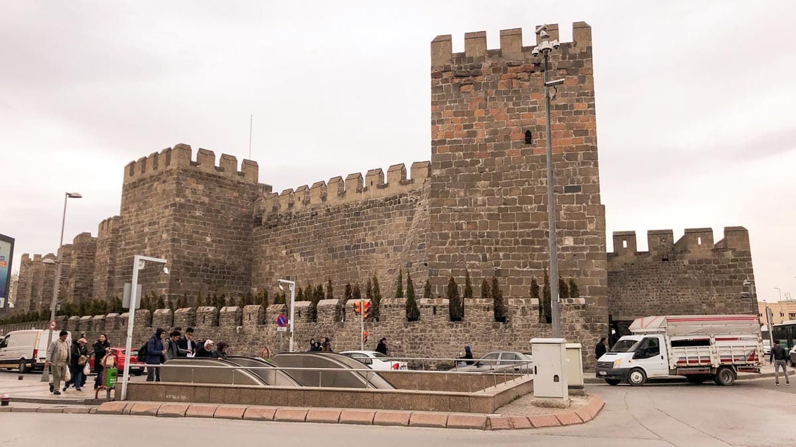

Bugün yapı sağlam bir durumdadır. İçkale, kuzeyden güneye 800 m. doğudan batıya 200 m. uzunluğundadır. Kalenin 18 burcu bulunmakta ve burçlar 3 m. genişliğindeki duvarlara yaslanmaktadır. Bu burçların altından devriye yolu geçmektedir.
Kalenin, biri kuzeydoğusunda, diğeri de Kazancılar çarşısına bakan güneybatısında olmak üzere iki kapısı bulunmaktadır. İki kapının da önünde, ilk hücumu önleyecek birer mazgal göze çarpmaktadır. Yine emniyet için, kalenin dış çevresine kazılan su hendeği, son yıllarda yeşil alan yapılmak için doldurulmuştur. Kalenin iç kısmında ve kuzey batısında, sur duvarına bitişik olarak yapılmış zarif bir cami vardır. Bu cami, şehrin Karamanlılar’dan, Osmanlı idaresine geçmesi sırasında, Fatih Sultan Mehmet tarafından, M. 1467 yılında, Gedik Ahmet Paşa"ın nezaretinde yaptırılmıştır. İç kale şu anda yoğun ticari faaliyetlerin gözlendiği bir bölgedir.